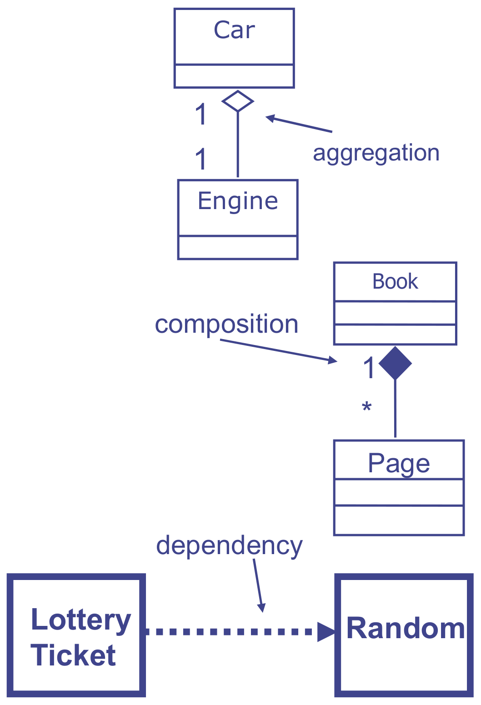
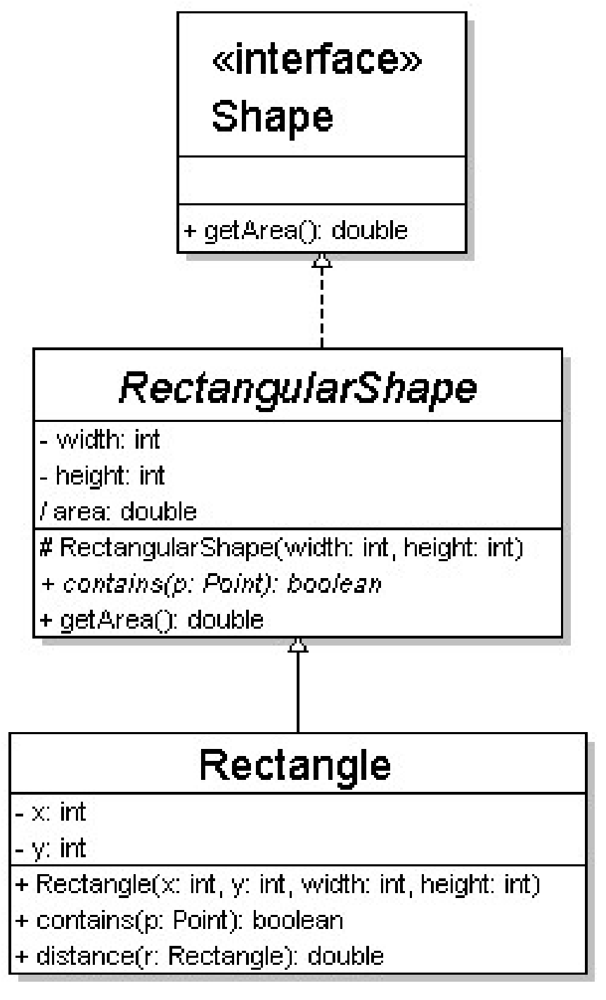
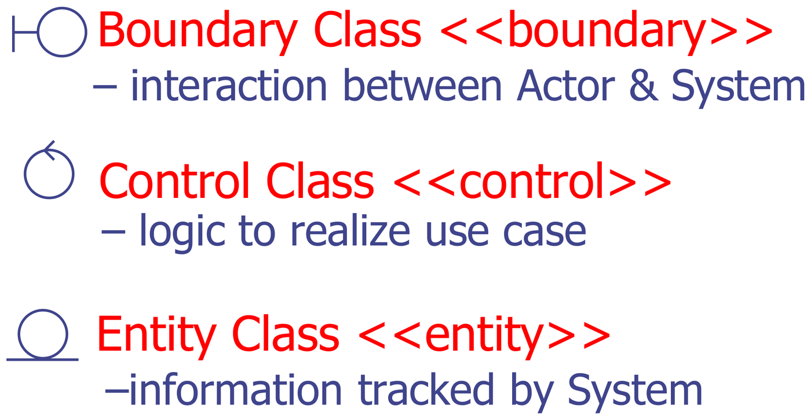
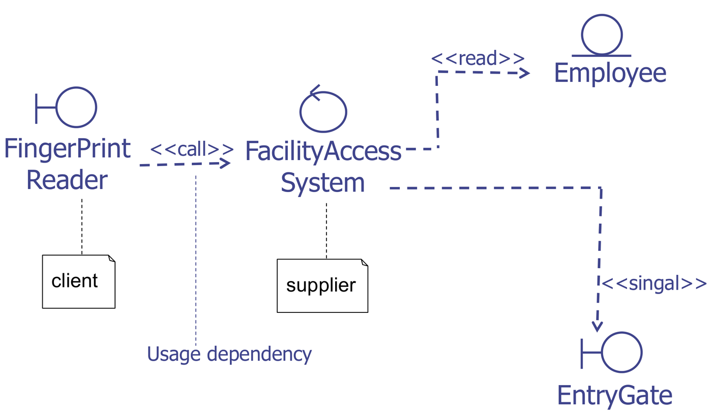
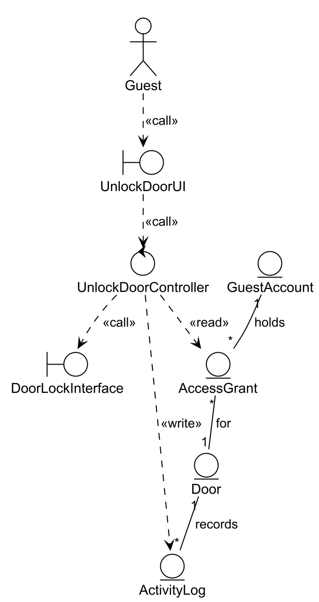

This was written entirely with AI.
From elicitation to analysis
| Requirements elicitation | Requirements analysis | |
|---|---|---|
| Purpose | Find out what the customer wants | Make a system model that is correct, complete, consistent and unambiguous |
| Output | Actors and use cases | A conceptual model (structure) and a dynamic model (behaviour) |
Elicitation uses the language of the customer. Analysis starts to use the language of the software engineer. The analysis models help in three ways:
- They make the structure and the behaviour of the system clear.
- They check the requirements. A missing class or a step that no class can do shows a gap in the requirements.
- They are the base for the design (Parts 9–11).
The two analysis models are:
- Conceptual model (this part). It identifies the objects in the use cases and the role of each object. You draw it as a class diagram.
- Dynamic model (Part 6). It shows how the objects carry out the use cases over time.
Objects, attributes and operations
- An object is anything that has a state and a behaviour. Examples: a bus, a dog, a login form, a user list.
- An attribute is a variable that holds part of the state. A bus has seats and a colour.
- An operation is a procedure that other objects call. A bus can start and stop. A login form can submit.
A class describes a group of objects of the same kind. A class diagram shows the classes and the relationships between them.
Class notation
A class is a box with three compartments:
- the name (the only part that you must give);
- the attributes, each with a type;
- the operations, each with a signature (name, parameters and return type).

Read the example box from top to bottom:
- TarifSchedule is the class name.
- Table zone2price is one attribute.
Tableis its type andzone2priceis its name. It maps each zone to a price. - Enumeration getZones() and Price
getPrice(Zone) are two operations. Each signature gives the
return type (
Enumeration,Price), the name, and the parameters in brackets (Zone).
This slide writes the type first, as in Java. Many UML tools write it
after the name instead: zone2price: Table,
getPrice(z: Zone): Price. Both mean the same thing.
Associations and multiplicity
An association is a solid line between two classes. It shows that objects of one class are linked to objects of the other class.
Multiplicity at each end of the association tells how many objects at that end are linked to one object at the other end:
| Notation | Meaning |
|---|---|
1 |
exactly one |
0..1 |
zero or one |
* or 0..* |
zero or more |
1..* |
one or more |
1..6 |
one to six |
Read the multiplicity at the far end. Example:
Person 1 —— 1 Head means one person has one
head. Polygon 1 —— * Point means one polygon
has many points.
The kinds of class relationship

Each pair in the figure shows one symbol. Look at the line (solid or dashed) and at the end shape (none, open arrow, diamond or triangle):
- Association (Passengers — Airplane): a plain solid line. The two classes are linked.
- Directed association (Airplane → Passengers): a solid line with an arrowhead. The arrow shows which class knows the other one.
- Reflexive association (Airline Staff to itself): a
class linked to itself. One staff member can supervise other staff
members. The
0..*at each end is the multiplicity. - Multiplicity (
0..*on the Passengers line): an airplane carries zero or more passengers. - Aggregation (Library ◇— Books): a hollow diamond at
the whole. The
1and*say that one library holds many books. - Composition (Library ◆— Books): a filled diamond at the whole. The parts are destroyed with the whole.
- Inheritance (Bank Account —▷ Fixed Account): a solid line with a hollow triangle at the parent. Note the direction: the triangle touches the parent (Fixed Account here, as the slide draws it).
- Realization (Printer Setup - - ▷ Printer): a dashed line with a hollow triangle. Printer Setup implements the Printer interface.
| Relationship | Meaning | Symbol | Example |
|---|---|---|---|
| Association | Objects are linked | Solid line | Customer —— Account |
| Directed association | Only one side knows the other | Solid line with open arrow | Order → Product |
| Aggregation | “is part of”. The part can exist without the whole. | Solid line, hollow diamond at the whole | Car ◇—— Engine |
| Composition | “is entirely made of”. The parts live and die with the whole. | Solid line, filled diamond at the whole | Book ◆—— Page |
| Generalization (inheritance) | “is a kind of” | Solid line, hollow triangle at the parent | Rectangle —▷ Shape |
| Realization | A class implements an interface | Dashed line, hollow triangle at the interface | MySQLImpl - - ▷ DataStore |
| Dependency | “uses for a short time”. Not part of the object’s state. | Dashed line with open arrow | LotteryTicket - - > Random |

Read the three examples from top to bottom:
- Car ◇— Engine,
1to1: aggregation. The hollow diamond is at Car, the whole. One car has one engine, but the engine is a separate thing. You can take it out and put it in another car. - Book ◆— Page,
1to*: composition. The filled diamond is at Book. One book has many pages, and the pages do not exist without the book. - Lottery Ticket - - > Random: dependency. The dashed arrow means the ticket uses a Random object for a short time (to pick its numbers). The ticket does not keep the Random object as part of its state.
How to choose between aggregation and composition: delete the whole. If the parts are also deleted, it is composition. A book’s pages go with the book (composition). An engine can go into another car (aggregation).
Generalization hierarchies are drawn from top to bottom, with the parent at the top. Do not draw obvious parents, such as the Object class in Java.

Read the hierarchy from the bottom up:
- Rectangle inherits from RectangularShape: a solid line with a hollow triangle. Rectangle gets width, height and getArea(), and adds x, y and distance().
- RectangularShape realizes the
Shape interface: a dashed line with a hollow triangle.
The
«interface»label marks Shape as an interface. It only declares getArea(). RectangularShape provides the code. - RectangularShape is in italics, so it is an abstract class. Its operation contains(p: Point) is also in italics: it is abstract and has no code. Rectangle must provide contains().
The signs in front of each member give its visibility:
| Sign | Visibility | Who can use it |
|---|---|---|
+ |
public | any class |
- |
private | only this class |
# |
protected | this class and its subclasses |
/ |
derived | the value is computed from other attributes (area = width × height) |
How to find the classes
The four activities are:
- Identify the classes.
- Find the attributes of each class.
- Find the operations of each class.
- Find the associations between the classes.
To find the first classes, look for:
- nouns and concepts that occur many times in the use case descriptions;
- real-world things that the system must track;
- problem-domain terms in the data dictionary.
Then review the definitions and the attributes with the stakeholders.
Example flow of events (Enter Secure Facility):
- The User presses a finger on the FingerprintReader.
- The FingerprintReader scans the fingerprint and sends the image to the FacilityAccessSystem.
- The FacilityAccessSystem validates the fingerprint and unlocks the EntryGate.
- The EntryGate sends a signal to the FacilityAccessSystem that it has opened.
- The FacilityAccessSystem locks the EntryGate, logs the entry event and increases the occupant count.
Possible classes: FingerprintReader, FacilityAccessSystem, EntryGate, Employee (who owns the fingerprint).
Boundary, control and entity classes
The analysis model puts each class into one of three stereotypes. Each stereotype has a different responsibility.

Learn the three icons by their extra stroke. All three are circles:
- Boundary: a circle with a T on its left side, like a wall the actor touches.
- Control: a circle with an arrowhead on top, like a cycle that drives the flow.
- Entity: a circle on a line, like an object that rests on the ground and stays.
You can draw a class as its icon with the name under it, or as an
ordinary class box with <<boundary>>,
<<control>> or
<<entity>> above the name. Both are
correct.
| Stereotype | Icon | Responsibility | Examples |
|---|---|---|---|
<<boundary>> |
Circle with a line on its left | The interaction between an actor and the system. Screens, forms and interfaces to devices and external systems. | LoginUI, PaymentGatewayInterface, SensorInterface |
<<control>> |
Circle with an arrow on top | The logic of one use case. It connects boundaries and entities. | LoginController, AllocationManager |
<<entity>> |
Circle with a line under it | Information that the system tracks and stores. Often from the domain. | Account, Booking, Door |
Why split classes this way: each kind of class changes for a different reason. Screens change often. Business rules change sometimes. Stored data changes rarely. When each kind is in a separate class, a change to one kind does not force a change to the others.
Which stereotypes can communicate
| From To | Entity | Boundary | Control |
|---|---|---|---|
| Entity | ✓ | ✗ | ✓ |
| Boundary | ✗ | ✗ | ✓ |
| Control | ✓ | ✓ | ✓ |
The important rules:
- An actor talks only to a boundary.
- A boundary talks only to a control. A boundary never talks directly to an entity.
- A control can talk to entities, boundaries and other controls.
- Entities link to other entities with associations.
Stereotyped dependencies
Label each dependency with what it does:
| Label | Meaning |
|---|---|
<<call>> |
The client calls an operation of the supplier |
<<read>> |
The client reads data from an entity |
<<write>> |
The client changes data in an entity |
<<signal>> |
The client sends a signal, for example to a device |
<<use>> |
A general use |
<<create>> |
The client creates the supplier object |

This figure is the Enter Secure Facility example above, drawn with stereotypes:
- FingerPrintReader is a boundary: it is the
interface to a device. It
<<call>>s FacilityAccessSystem. In a dependency, the class at the tail is the client (it needs the other class) and the class at the arrowhead is the supplier (it provides the service). The two notes mark these roles. - FacilityAccessSystem is a control: it holds the logic of the use case.
- It
<<read>>s Employee, an entity, to check whose fingerprint it is. - It sends a
<<signal>>to EntryGate, a boundary to another device, to open the gate. (The slide misspells the label as “singal”.)
Every arrow starts at the control or ends at the control. No boundary talks to the entity directly.
Method: draw a conceptual class diagram for one function
- Read the use case description and the data dictionary for the function.
- Boundaries. Add one boundary for each actor that
takes part:
- a UI class for each human actor (for example
UnlockDoorUI); - an interface class for each device or external system (for example
DoorLockInterface,EmailServerInterface).
- a UI class for each human actor (for example
- Controls. Add one control for each use case in the
function (for example
UnlockDoorController). An included use case can get its own control. - Entities. Add one entity for each noun that the
system must remember (for example
AccessGrant,Door,ActivityLog). - Dependencies. Draw actor → boundary → control →
entity. Label them
<<call>>,<<read>>,<<write>>. - Associations between entities. Add multiplicities. Add generalization where one entity is a kind of another.
- Show the stereotype of every class, as an icon or
as
<<boundary>>text. - Leave out attributes and operations, unless the question asks for them.

Follow the diagram from the top:
- The Guest actor
<<call>>s UnlockDoorUI, a boundary (the screen). - UnlockDoorUI
<<call>>s UnlockDoorController, the control for the Unlock Door use case. - The controller
<<read>>s AccessGrant to check that the guest has access now. - The controller
<<call>>s DoorLockInterface, a boundary to the lock device, to open the door. - The controller
<<write>>s ActivityLog to record the event.
The solid lines among the entities are associations, with multiplicities:
- GuestAccount 1 — * AccessGrant (“holds”): one guest account holds many grants.
- AccessGrant * — 1 Door (“for”): each grant is for one door. One door can have many grants.
- Door 1 — * ActivityLog (“records”): one door has many log entries.
Check the layer rule: the UI never touches an entity. Only the controller reads and writes entities.
Refining the model
The first version of a conceptual model often has only entities: the nouns that the system stores. The boundary and control classes come when you refine the model against the use cases. A larger system repeats the same pattern for each use case. One UI per human actor, one interface per device or external system, one controller per use case. A main UI and a main controller can sit on top to route the user to each function.
When two entities are kinds of one general thing, use generalization.
Example: a parcel system can have IncomingParcel and
OutgoingParcel as kinds of Parcel.
Getting ready for exam questions
The usual question: “For function X, identify the main classes and their associations and draw a conceptual class diagram. Show the stereotype of each class. You do not need attributes or operations.” (8–9 marks)